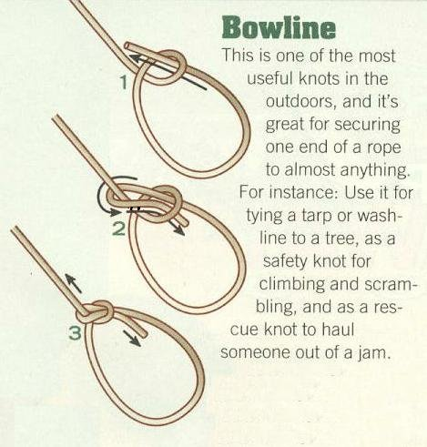

Every TA should know how to tie a bowline knot. Any time you need a loop in the end of a string, tie a bowline. Nearly any other knot will slip and leave the subsequent lab groups very upset. The knot is a simple one -- just follow the steps below. The way I remember it is the way Quinn taught Brody in the movie Jaws:
To tighten the knot, grab both loose ends and pull hard.
 If you have a question or comment, send an e-mail to Lab Coordinator: (contact details removed)
|
|||||||||
|
|
|||||||||

Copyright © 2006. Clemson University. All Rights Reserved. |